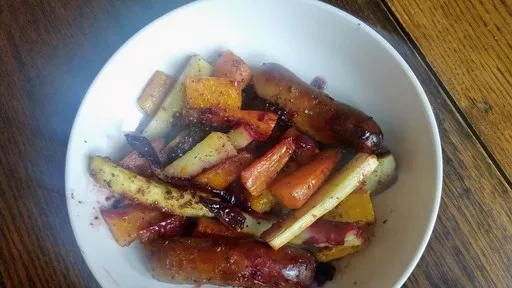

Sausage, sage and blackberry traybake

A sweet and sticky autumnal traybake for cosy evenings in
Servings: 4
Total: 1 hr 20 mins
Ingredients
- 1 medium butternut squash, peeled deseeded and cut into 2 cm wedges
- 4 large parsnips, each peeled and cut lengthways into 6
- 2 medium red onions, cut into wedges
- 3 tbsp sage, finely chopped
- 8 sausages - make sure these are GF if required
- 4 tbsp olive oil
- 4 tbsp clear honey
- 4 tbsp wholegrain mustard
- 225 g sweet blackberries
Instructions
- Preheat the oven to 200°C, Gas 7. Toss the vegetables,
sage3 tbsp
and sausages8
together in a large roasting tin with the oil4 tbsp
and some seasoning. Spread out in the tin. Roast for 40 minutes, turning the sausages8
halfway through so that they colour evenly.
- Whisk the
honey4 tbsp
and mustard4 tbsp
together. Scatter the blackberries225 g
over the sausage and veg then toss the honey4 tbsp
-mustard4 tbsp
mixture through the tin. Return to the oven for 15 minutes until the sausages8
are cooked through and the root veg are tender.
-
kcal
702
-
fat
42 g
-
saturates
11 g
-
carbs
48 g
-
sugar
34 g
-
fibre
13 g
-
protein
26 g
-
salt
2.2 g
www.sainsburysmagazine.co.uk
Short Link
Long Link

 Dairy Free
Dairy Free Gluten Free
Gluten Free